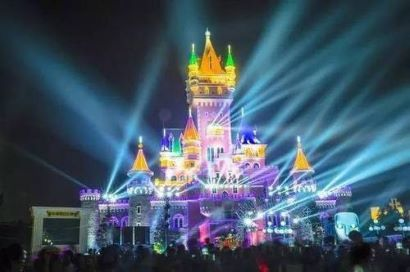
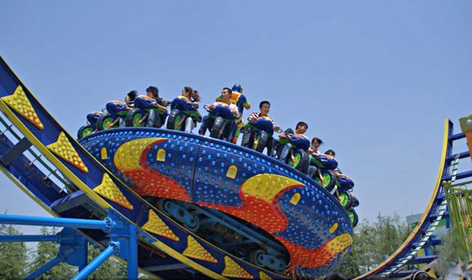
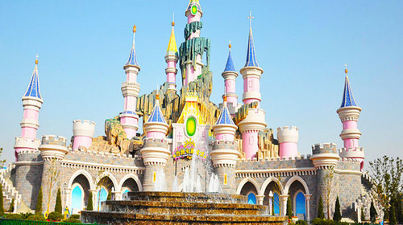

青岛方特梦幻王国
时间：2019/11/11

【简介】
青岛方特梦幻王国位于美丽的山东省青岛市红岛海滨——高新区 [1] 红岛街道岙东南路，是华强方特（青岛）文化科技有限公司产业基地内核心的高科技文化游乐项目。拥有10多个主题项目区、包含主题项目、游乐项目、休闲及景观项目、配套服务项目等200余项
【景区】
青岛方特梦幻王国由深圳华强集团投资兴建，是一座大型高科技第四代主题乐园。方特梦幻王国最大特点是以现代高科技手段全新演绎古老的中华文化，以高科技互动体验营造梦幻的感受。方特梦幻王国采用国际一流的理念和技术精心打造，可与西方最先进的主题乐园相媲美，被誉为“东方梦幻乐园”。

方特梦幻王国是第四代主题乐园，代表着当今国际主题乐园的主流，青岛方特梦幻王国由飞越极限、生命之光、聊斋、水漫金山、宇宙博览会、秦俑地宫、梦幻之旅、逃出恐龙岛、唐古拉雪山、火流星等十余 主题项目区组成，包含主题项目、游乐项目、休闲及景观项目200余项。内容涵盖现代科技、未来科技、科学幻想、神话传说等。创造性的运用高科技手段将动漫卡通、电影特技等国际时尚娱乐元素与中国传统文化符号精妙融合，将让游客身临其境，大呼过瘾！